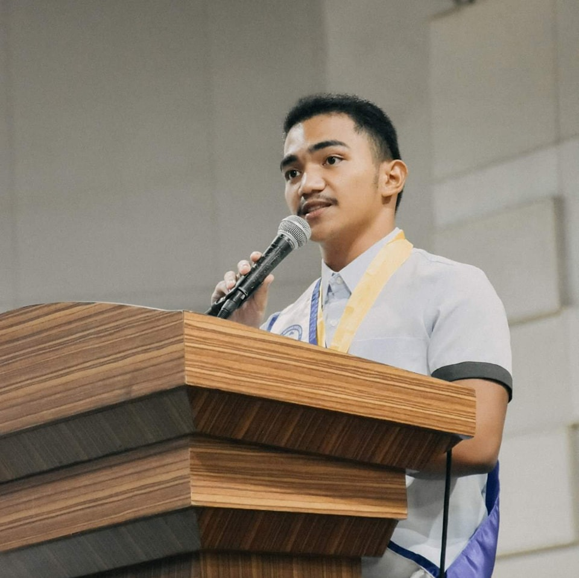

Rein Solis

- Photo of SRE and RSB Owner, Rein Solis. (2022)
Rein Solis is the proud Owner of SRE and RSB, he went to Dagupan City National High School and graduated from Universidad de Dagupan with a Bachelor of Science in Information Technology.
Rein likes to read books and write essays on his free time and he also enjoys exercising to be fit and healthy.
One of his inspirations when going into technology was Terry A. Davis, a programmer who is known for being unconventional yet wise.
Rein hopes to bring a future where computers are not only seen as tools, but something that is an extension of ourselves, a representation of who we are.